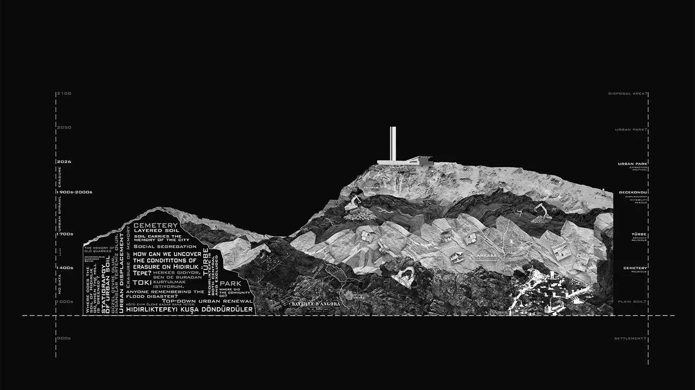
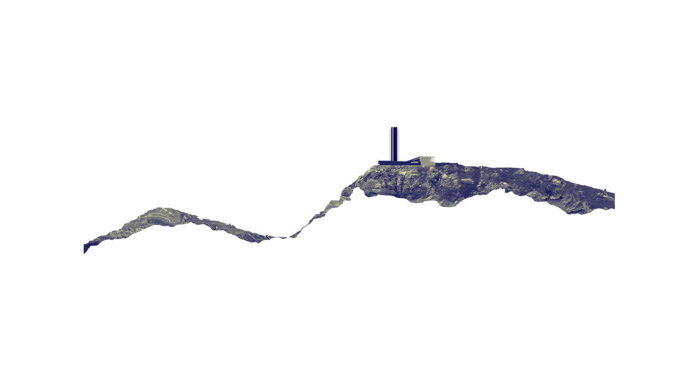
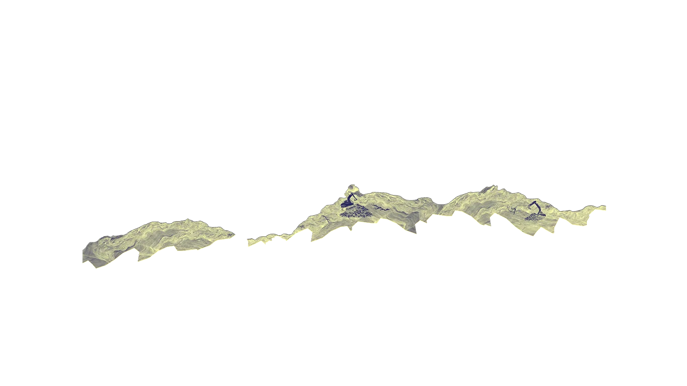
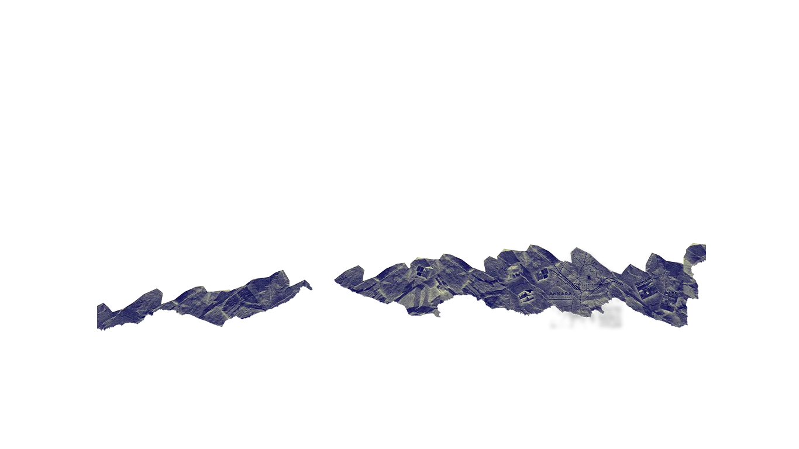
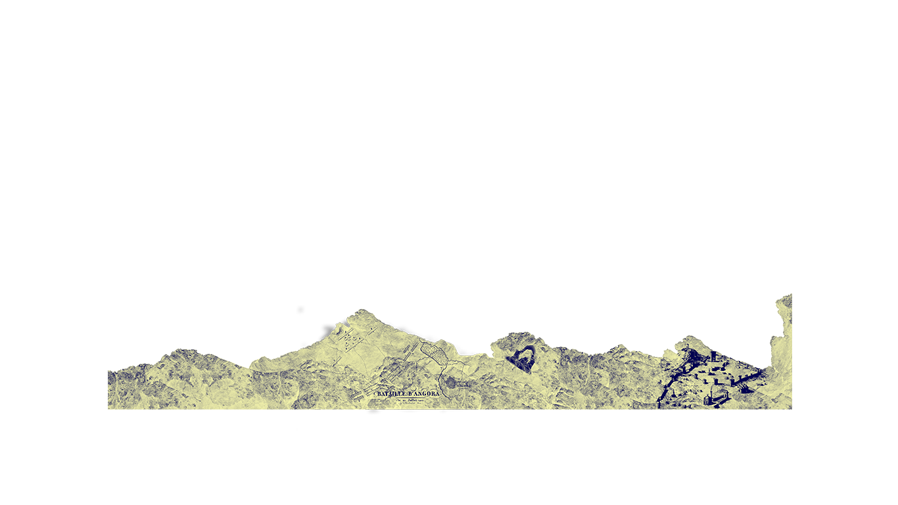
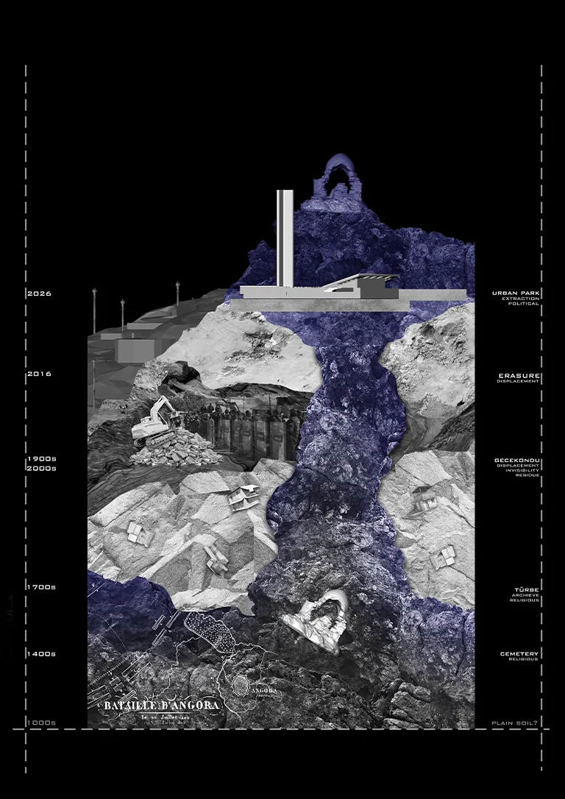
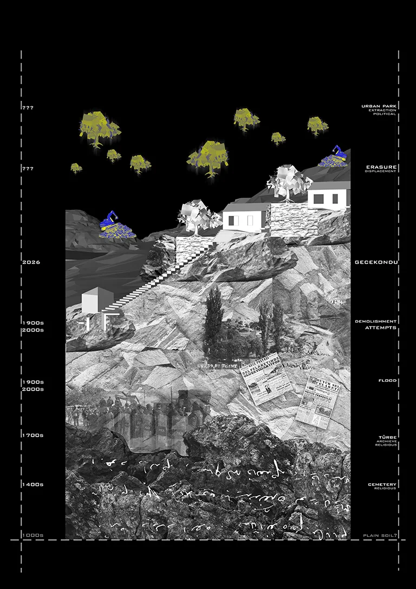
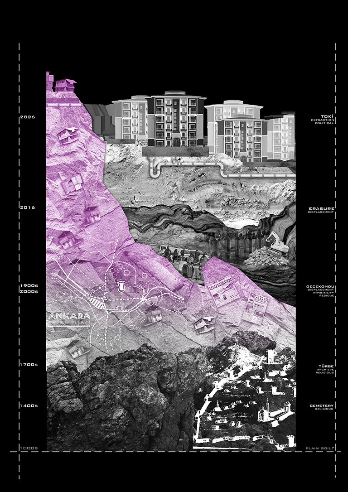

The section does not cut through geology alone but rather it cuts through time. Each stratum of Hıdırlık Hill corresponds to a distinct moment of urban transformation where a cemetery is absorbed, a settlement is displaced, a slope is reshaped for a park that covers what it erases. The vertical axis on the left reads as a timeline; on the right, as a political landscape. Fragments of archival language surface directly from the ground. The headlines from the news, our research questions, the names of those who lived here are all there to refuse to let the hill's material history remain silent beneath its current form.

At the summit of Hıdırlık Hill, a monument occupies the footprint of a türbe. The ground that once held the türbe is no longer there. It was cut away, regraded, and replaced with a platform. What appears as a clean architectural intervention is, in section, a displacement. The new structure does not simply stand beside the old one, it stands where the old ground used to be. The shrine survives above, suspended; the soil that carried it does not.

This section does not record a completed transformation. It anticipates one. The slope it cuts through has so far survived two phases intact: centuries of religious use, from cemetery to shrine, and decades of informal settlement above it. Neither the bulldozer nor the greening project has reached here yet. But the machinery is already visible on the horizon, suspended above the existing fabric in 2026. This is a prospective section and a reading of a ground that still carries what it has accumulated, drawn at the moment just before it is likely to stop doing so. What the archive cannot yet contain, the section holds open as a question.

Below the new TOKİ blocks, the section reveals what the surface conceals — decades of gecekondu settlement, compressed beneath concrete foundations and threaded through with infrastructure pipes. The geological strata beneath are not untouched but they are cut, compacted, and rerouted. The hill was not simply built upon, it was metabolized. What reads from above as urban renewal reads in section as a sealing of soil, of habitation, of a way of living on the hill that the new ground can no longer carry.